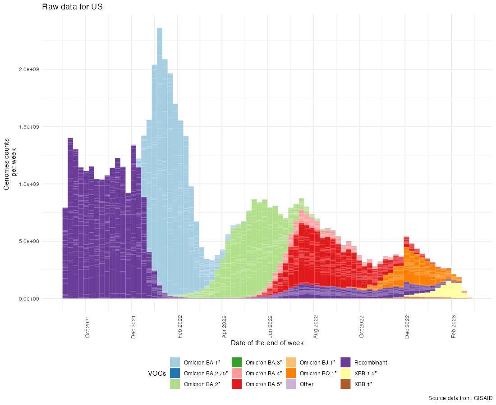
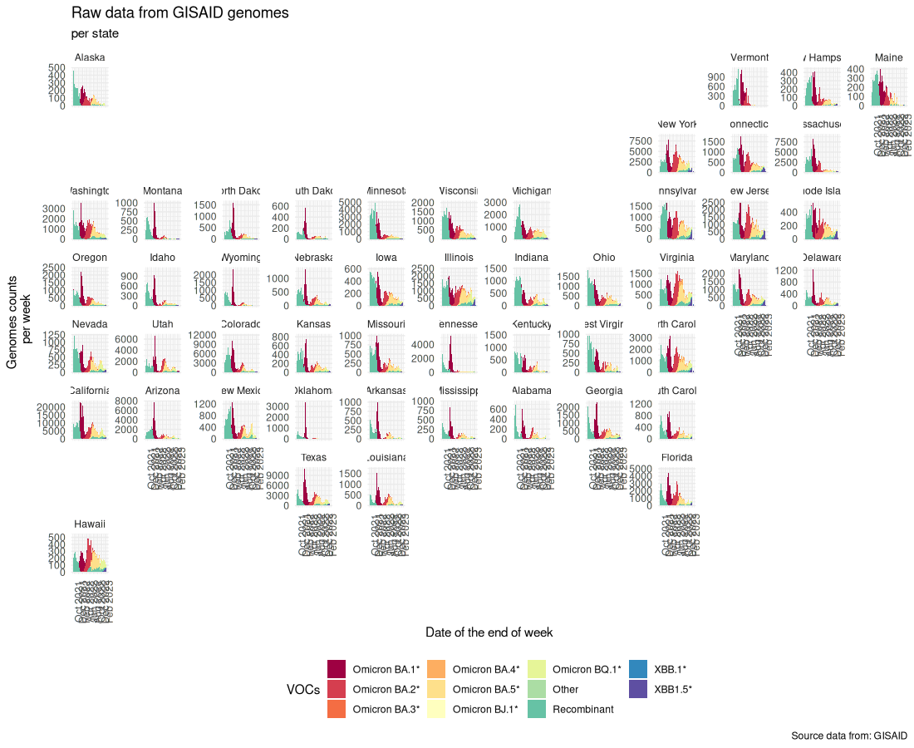

flowchart LR
A[(Raw Global Metadata)] -- US deposited sequences --> B[(US Metadata)]
B --> C{Variant categorization}
C --> D[Count of sequences]
C --> E[Frequency of sequeces]
From GISAID is a genomic database maintained from collective uploading by researchers, has been the main platform collecting the genetic and genomic data sequence of SARS-CoV-2 virus. From the metadata of this sequences, we have made this assessment on the information and surveillance sequencing in the US.
The global metadata from GISAID sizes ~11GB, with information from the purpose, the date of collection of the sample, the date of submission of the sequence into GISAID, the location (the micro spatial level, at US county-level information), the division (the middle spatial level, at US state-level information), the region (the macro spatial level, for the US data, the sub-continental information, North America region)
flowchart LR
A[(Raw Global Metadata)] -- US deposited sequences --> B[(US Metadata)]
B --> C{Variant categorization}
C --> D[Count of sequences]
C --> E[Frequency of sequeces]
We have filtered the metadata to only count for human host sequences and sequences regarding case from the US.
## Loading packages
packs<-c("tidyverse", "vroom")
lapply(packs, require, character.only = TRUE)
## Loading functions
source("Functions/functions.R")
## Loading the metadata and states
metadata<-vroom::vroom("../Data/metadata/metadata_2023-04-09_23-54.tsv.gz")
## States abbreviation
states<-vroom::vroom("../Data/state_abbreviation.tsv")
## Filtering for the US, human only infections, and formatting date
metadata<-metadata |>
dplyr::filter(country == "USA",
host == "Human") |>
dplyr::mutate(date = as.Date(date, "%Y-%m-%d"),
## Fixing DC
division = dplyr::case_when(division == "Washington DC" ~ "District of Columbia",
TRUE ~ division)) |>
## Filtering out any state name that is not matching 49 contiguous states plus Alaska and Hawaii
dplyr::filter(division %in% states$name_state)After this, we categorize the sequences by search on their “Pango lineage” columns and sub-setting them as any categories. The choices on categorization were based on the Variants of Concern monitored from the CDC Variant Tracker. From the categories that CDC maintains nowcasting projections, we reduced them to only 7, being them:
## Formatting metadata in a more pratical form
metadata <- metadata |>
## Dummy date variable
mutate(copy_date = as.numeric(date)) |>
## Choosen lineages to be analyzed
mutate(voc_cdc = case_when(grepl(x = pango_lineage,
pattern = '^BA\\.1',
perl = TRUE) ~ 'Omicron BA.1*',
grepl(x = pango_lineage,
pattern = 'BA.2.75',
perl = TRUE) ~ 'Omicron BA.2.75*',
grepl(x = pango_lineage,
pattern = '^(?=.*BA.2)(?!.*BA.2.75)',
perl = TRUE) ~ 'Omicron BA.2*',
grepl(x = pango_lineage,
pattern = 'BA.3',
perl = TRUE) ~ 'Omicron BA.3*',
grepl(x = pango_lineage,
pattern = 'BA.4',
perl = TRUE) ~ 'Omicron BA.4*',
grepl(x = pango_lineage,
pattern = 'BA.5',
perl = TRUE) ~ 'Omicron BA.5*',
grepl(x = pango_lineage,
pattern = 'XBB.1.5',
perl = TRUE) ~ 'XBB.1.5*',
grepl(x = pango_lineage,
pattern = 'XBB.1',
perl = TRUE) ~ 'XBB.1*',
TRUE ~ 'Other')) |>
## Completing dates to avoid missing dates
complete(date, nesting(voc_cdc), fill = list(copy_date = 0)) |>
## Putting date at the ending date of the epiweek
mutate(epiweek = end.of.epiweek(date))
## Variant sequences counts
variant_count<-metadata |>
## First probable sequence of Omicron in the US
filter(date >= "2021-09-01", !is.na(division)) |>
## dummy date column
mutate(copy_date = as.numeric(epiweek)) |>
## Grouping by epiweek, state and voc_cdc
group_by(epiweek, division, voc_cdc) |>
summarise_at(vars(copy_date), list(n = sum)) |>
mutate(freq = round(100*n/sum(n),2)) |>
rename(name_states = division)From the metadata of sequences, we can plot, to understand in an overview, how is the succession of variants and sub-lineages of Omicrons in the US. We plot the frequencies of each category and the raw count numbers.

After it, we break the data in a more grainular level, of states. And we plot the the counts of variants as well as the frequencies of them, over the whole US, for all states. This helps in visualizing the successive waves of Omicron sub-variants.
